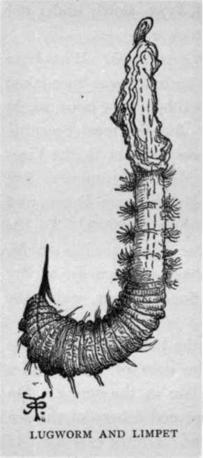
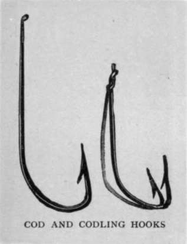

Cod, Haddocks, Whiting, Bream, Conger, Sharks, Etc. Continued
Description
This section is from the book "Sea Fishing", by John Bickerdyke. Also available from Amazon: Sea Fishing.
Cod, Haddocks, Whiting, Bream, Conger, Sharks, Etc. Continued
Professar Sars, of Norway, who has made a special study of these fish, found that the eggs floated unless the specific gravity of the sea was lessened by river water flowing into it, which would cause them to sink. At Flodevig, for instance, after a long succession of winds from the east or south-east, the brackish waters of the Baltic are so mixed with those of that portion of the North Sea that salt has to be added to the breeding ponds. Otherwise the eggs will not float.
The eggs are from about eighteen to thirty or more days in the hatching, according to the temperature of the water. Like a trout, the little fish when first hatched is furnished with a tiny food supply of its own, contained in an umbilical sac.1 When this has been exhausted the young cod, now an inch long, come shorewards and feed and are fed on, many millions doubtless being eaten by larger fish and sea birds. When a year old they seek deeper water. Fishermen call anything under twenty inches codling, from twenty to thirty inches sprags, then come half cod, and then cod. They are such voracious feeders, and the sea is such a good feeding ground, that their growth is undoubtedly very rapid. According to Jackson, some cod which were in the Southport Aquarium grew from three-quarters of a pound to six or seven pounds each in a period of about sixteen months, and they would without much doubt grow still faster in the sea.
In the matter of food the cod is the ostrich of the sea. Whether a tenpenny nail or a soda-water bottle has yet been discovered in one of these fish I do not know ; but if keys, why not tenpenny nails ? For there is a very pleasant story of a certain Captain Hill who dropped a bunch of keys overboard from a trawler in the North Sea, and weeks afterwards found them again in the belly of a codfish captured miles away. Live crabs are not pleasant things to swallow, one would think, but cod take them readily enough, and in a Scotch cod was found an entire Norway lobster. Dr. Day recorded how one Grove took a piece of candle seven inches long from the inside of a cod, and how Mr. Reid, of Wick, saw a black guillemot in perfect feather removed from the stomach of one of these fish in March 1879. Cod often play the marauder, and rival the cuttle-fish by feeding on the herrings which have been meshed in the drift nets. It is a common thing for a small fish to be caught on a long line, for a cod to come swimming by and take the small fish, and there is always the chance of a huge halibut absorbing the cod and going off with line and all. Truly the sea is a place of marvels, which is one great charm of it.
1 At Dunbar, N.B., is a hatchery instituted at an expenditure of only 1,600 l. and costing annually about 600 l.' Up to the present its managers have hatched and planted in the sea 69,585,000 fry of various sea fish, of which this year (1895) nearly three millions were cod. Why does not the Government establish fifteen or twenty such hatcheries ? The comparatively small outlay required would soon be repaid twenty-fold.듉. B.
Just such another incident듨inus the halibut듞ame under my notice in the north of Scotland. Some friends and I were out in a fishing boat moored over a famous haddock ground. On the flood tide boat-loads of crofters came off and laid their short long lines 들f I may use an Hibernianism드ll round us, leaving them down about an hour, then taking them up with something like a haddock for every three hooks. Eighteen a shilling these excellent fish were selling for in the clachan. I was fishing with a single gut paternoster, just such a one as I have described on p. 238, but of fairly stout gut. Our bait (mussels) ran short, so, leaving them for the ladies who were on board and anxious to have good sport, I cut up a haddock for myself and fished with the pieces.
One of our crew at once said that I was not likely to catch haddocks with that bait, but if there was a cod about I should surely have him. But I did catch a haddock or two, and presently there was a heavy weight on the rod which was irresistible. There was no rush such as a lythe or saithe would make, simply a steady march-along motion, which took my line off the reel inch by inch. I played the fish as hard as I dared, and after a while, to my surprise, he suddenly came to the surface a good many yards away, and turned over on his back. It is a way with cod ; whenever they exert themselves something appears to go wrong with their air bladder, and they can no longer keep near the bottom. Perhaps it is a good thing for anglers who fish with fine tackle that this is the case. However, there was the fish, and without difficulty we now reeled him in. The scumma, as Murdo called our landing net, was placed under him, and he was lifted into the boat. He was a fine big, fat cod, and from his mouth dangled a snooding made of six or seven horsehairs twisted. When the cook at the lodge cut him open that night she found on the end of the said snooding a hook, and on the hook a good-sized haddock. This greedy fish had evidently lifted the haddock from one of the crofters' lines, swallowed it, broken off the horsehair snooding, and, thinking nothing of the incident, swam slowly under our boat, saw my piece of haddock, and took it.
But this is nothing to what cod do sometimes. It has been said듩ay, more, put in print듮hat a partridge was once taken from the stomach of such a fish, while others have been caught containing hares and white turnips. But the most eccentric cod I ever heard of was one which was brought to the Vice-Chancellor of Cambridge somewhere about Midsummer's Eve in the year 1626. He had been caught in Lynn Deeps, and from his maw was taken ' a booke in three treatises.' To the naturalist the cod is of even greater value than to the bibliophile, rendering up from his capacious stomach an immense variety of rare and sometimes beautiful marine creatures, which the trawl usually maims or destroys.
Cod are in first-rate condition for the two or three months previous to the time they spawn, the date of which varies in different places from January to late in the spring. On most parts of our coast the longshore cod fishery of the sea angler begins in September or October. On the east coast of England and Scotland immense shoals of small codling make their appearance at the end of summer. These may be only half-pounders or pounders. A fortnight or so later fish of two pounds will be caught, while about Christmas and onwards large cod will be found foraging for food within a hundred yards of the shore. It should be understood that this statement of time and size of fish is to be taken as a very general one, for both the size of the fish and the dates of their arrival vary very much in different localities and also at different seasons. This longshore cod fishing is quite an institution on the East coast in the autumn. I have said a good deal about it on pp. 60 and 209, to which I would refer the intending cod fisher.
When we are dealing with fish which will take anything, from a white turnip to ' a booke in three treatises,' it is obvious that we are not likely to go far wrong in choosing a bait ; but I must say that, as in fresh water the same kinds of fish appear to favour different baits in different places, so it is with cod. On the East coast nothing answers better than mussels, unless indeed it is a lugworm or squid. In some places I have found lugworms better than any other bait I could try, including mussels. Then, again, when fishing up in the Hebrides, as I have described, the mussels beloved of haddock were quite disregarded by the cod, which were not attracted until I had covered my hook with a piece of haddock. A composite bait highly thought of by Scotch fishermen is made of lugworm and limpet. Its mode of attachment to the hook is explained by the illustration. Squid is a first-rate bait for cod, and so are pilchards, sprats, sand-eels, herring, and mackerel. The whelk, called buckie in Scotland, is one of the most favourite baits for long lines, not so much because cod are particularly fond of it, but because it is not usually taken off the hook by crabs and similar fish. I have often tried whelk against mussel and lugworm, and always found I caught fewer cod on them than on the more luscious baits.
With regard to the size of hook, that must, of course, depend on the general run of the fish and the sort of bait which is being used. They may vary between the two sizes shown. The smaller드 curved Limerick들s particularly suitable for codling fishing with mussel bait. While it is, of course, a very great mistake to put a tiny bait on the point of a big hook, it is an equally big mistake to cover a small hook with a large-sized bait. Let both be in proportion ; let the point of hook be sharp, and not guarded by a hard bait, and strike sharply as soon as a fish is felt. I have often caught a dozen or more codling without missing one when fishing with good hooks and a rod. In English waters cod are mainly caught by professional fishermen on long lines and in the trawl, and in the illustration overleaf are shown the hooks and snoods which are used for this purpose in the North Sea. The tendency among the codmen is to use smaller hooks than formerly. By ' inshore,' as applied to the smaller hook, is meant waters within say forty miles of the coast and from about ten to fourteen fathoms in depth. A sea angler will generally use a paternoster. For fish up to ten pounds single gut is quite strong enough unless the lead required is a heavy one, say over a pound, in which case double or treble gut is desirable. Treble gut, of course, varies in thickness ; it may consist of three thicknesses of fine gut or three thicknesses of stout gut. A very fine paternoster, one which many people have considered to be good for cod fishing, is made by taking two stout salmon casts and lightly twisting them together, swivels being inserted at intervals to carry the hook links, which may be of twisted gut or gimp slightly less strong than the main length. I fished with one and the same single gut paternoster for three years in succession, and even then did not lose it, but threw it away as it had become very much frayed, though still strong. Certainly salt water does not rot gut.

Continue to:
- prev: Chapter XIII. Cod, Haddocks, Whiting, Bream, Conger, Sharks, Etc
- Table of Contents
- next: The Whiting
Tags
fishing, hooks, bait, fishermen, spanish mackerel, mackerel fishing